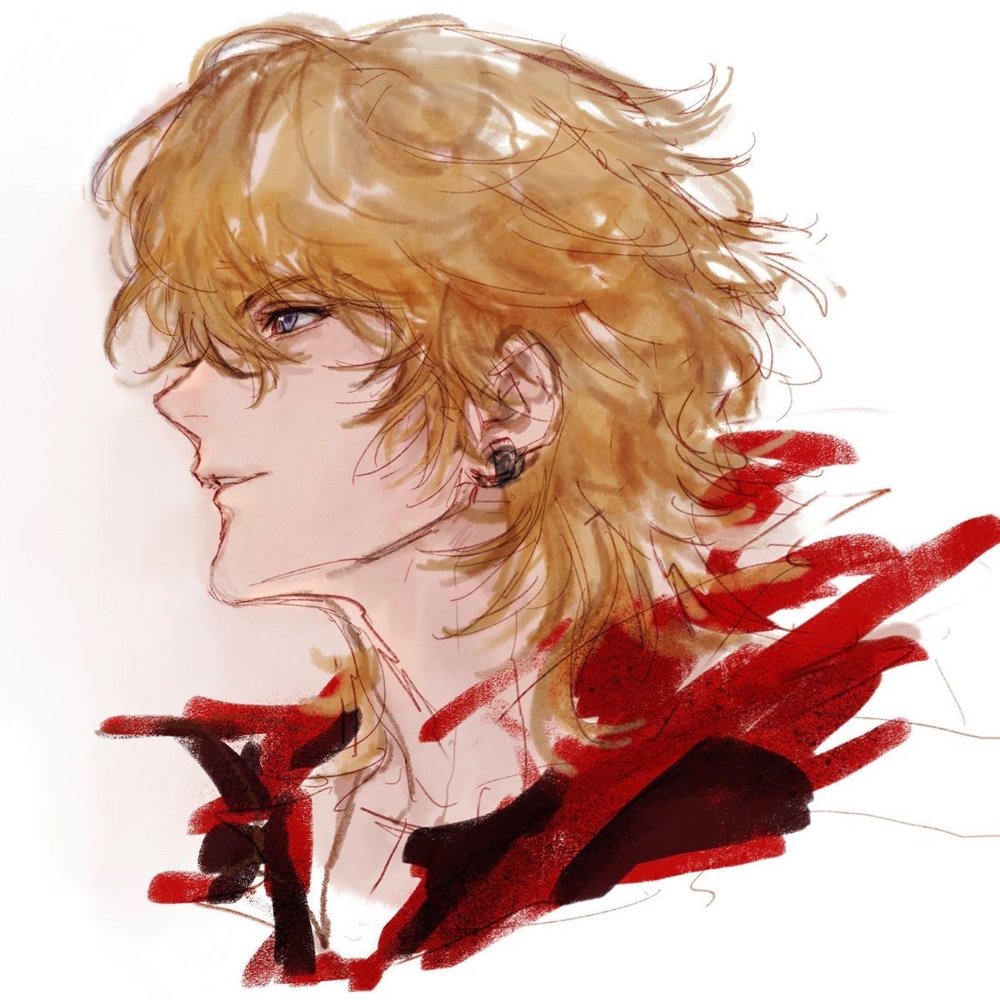

Kimizu Moto
Prince of the North · The Mirror
I. Identity
Full Name: Kimizu Moto
Name: Ki (what stands) and Mizu (water): the thing that stands in the water. It ties him to his sister Mizuyi.
Age: 10, the youngest
Race / Lineage: Human · Moto, the Kōkan, the red line; Greymane through his mother
Faction: House Moto at Kharven-Seat. Son of King Muken Moto and Queen Amelia Greymane.
Epithet: Not known.
Status: Alive
Family: Father Muken Moto; mother Amelia Greymane; elder brothers Sodoku (13, the crown prince) and Sonzai (13); sister Mizuyi, taken by Cozbi Mahuo on the night of her betrothal; brother Tenma (12).
Current Location: Kharven-Seat
Catalyst Event: Not known.
II. Soul Architecture
| Stat line | Stage V Splintering · Expert (Faceted) Level 125 · Refined · unclassed Spirit V Mastered, unread · Fate IV Walked 30%, I · Lenses: home |
| Level | 125; it holds Splintering (101), and no Residual Strain builds in him short of 200 |
| Stage | V, Splintering · Expert |
| Path | Spirit V Mastered · Fate IV Walked 30% |
| Mastery | Spirit unread, below Glory · Fate I, Touched: the Moto blood and the Work of Knowledge open his Fate road one rung early, from Ascension |
| Yield (η) | 0.62 |
| Class | unclassed until Glory |
| Soul Crystal | Faceted, Refined |
| Fate Art | Knowledge · grip · Fate I |
| Points | 3,063 |
The Work of Knowledge at its extreme. YOMI is the Moto’s Work of Knowledge, CHISHIKI NO SHIGOTO, held further than the house has seen it held: “Your true name is read out, and you stop being able to pretend.”
III. Wellspring Harmonizations
| Wellspring | Folk name | Kind | Titan | Operation | Hue | Depth | What it does in him |
|---|---|---|---|---|---|---|---|
| Judicium | the Scale | Wild | Dazkar | separation | arc-blue, with colored fringes | deep | Truth told apart: what a thing is made of, and whether it is lying, from the mark it cannot help leaving. Judicium readers read weakness the way the lettered read text, and YOMI runs on it. Strengthens Acuity and Analysis. |
Aura: arc-blue, with thin lines of color at its edges where things come apart into their true parts. It shows mostly in his eyes.
IV–V. Stats
A normal look shows the Eight Primaries; a Primary is the total of its eight Sub-Stats (Dominion’s over seven, Throne outside it). Room to grow: every Primary but Gnosis sits well under the Stage’s roof, and his Gnosis already stands at the top of what Stage V allows.
| Primary | Total | Sub-Stats |
|---|---|---|
| Vitality | 203 | Fortitude 25 · Absorption 25 · Constitution 28 · Hemostasis 25 · Regeneration 24 · Filtration 28 · Tolerance 24 · Threshold 24 |
| Ardency | 168 | Flux 21 · Alacrity 21 · Depth 24 · Penetration 21 · Compression 21 · Cascade 21 · Overchannel 18 · Density 21 |
| Gnosis | 1446 | Perception 275 · Acuity 204 · Forecast 161 · Fluency 138 · Retention 184 · Analysis 243 · Cognition 151 · Vigilance 90 |
| Dexterity | 314 | Celerity 28 · Reflex 80 · Finesse 41 · Economy 34 · Evasion 41 · Grapple 18 · Feint 34 · Sequence 38 |
| Harmonics | 233 | Attunement 47 · Projection 24 · Breadth 34 · Stability 31 · Empathy 31 · Synergy 24 · Axis 24 · Suppression 18 |
| Resilience | 260 | Integrity 41 · Ward 47 · Persistence 28 · Anchoring 47 · Fortification 21 · Hardening 21 · Oath 21 · Continuity 34 |
| Tempering | 262 | Clarity 60 · Overflow 24 · Maturity 34 · Coherence 44 · Tempering Yield 31 · Ceiling 24 · Capacity 24 · Longevity 21 |
| Dominion | 177 | Radius 24 · Sovereignty 18 · Sense 34 · Gravity 18 · Pressure 21 · Command 21 · Fate 41 · Throne 0 |
VI. Force of Hand
No measured strike on file. Ardency 168: he hits like a ten-year-old. KAGAMI’s copies run at his own strength, which is why he copies the clever moves and not the heavy ones.
VII. Aether Flow
| Reserve | 105,124 EU, held as Essence, by the law of reserves at Level 125 |
| Flux Density | 600 EU/g |
| Yield (η) | 0.62, what a hall expects of an Expert; below Glory no Mastery is read and the Stage’s own figure is the yield |
| AU/s | 372.0 at full output |
| From full | about 4.7 minutes of full output, far longer at the pace of a lesson or a quarrel |
| A Fate pull | at Fate I, 0.60 to 0.70 of what he spends arrives; the price is the knot |
VIII. Traits
Full accounts: Kimizu Moto — Abilities
Below Glory his Mastery is unread, and every Trait works at its base.
YOMI (読み), the Reading · Primary Trait
YOMI is basically Information Analysis: the power to read anything completely, find its weakness, and copy what it does. “Read” is the Moto house’s own verb for a person, and in Go and shogi yomi is a master seeing the board many moves ahead. Kimizu does both. He looks at a person, a sword, a wall, a technique or a Wellspring, and it opens to him like a book: what it is made of, what job it was made for, how strong it is, and the one loose stitch where it will come apart. He can read other people’s windows, which nobody is supposed to be able to do. He can copy a technique after seeing it once. He learns anything faster than anyone, and he has been correcting his tutors since he could talk. At its height it is the Moto’s Work of Knowledge at full strength: he reads a thing’s true name aloud, and it can no longer pretend. Disguises fall, illusions break, and a lie stops working in front of him. Yomi is also the old name for the land of the dead, and the house has noticed. The price is that he cannot stop reading. Every face, wall and wound tells itself to him all day, and after a big read his eyes bleed and he goes flat and empty the way the Moto do after a verdict. His copies work at his own strength, not the original’s, and copying a bloodline art or a Fate art fails or hurts him badly. He knows what a thing is, not what a person will choose.
ISSHUN (一瞬), the Instant · Secondary Trait
ISSHUN is basically Accelerated Thought: the power to think so fast that the world goes still around him. Isshun means an instant, the blink of an eye. When Kimizu is in danger, his mind leaves the world behind. A falling sword hangs in the air, an arrow sits frozen in flight, and a man’s face is caught halfway through deciding what to do. Everything slows to a crawl except him. In that stillness YOMI has all the time it needs: he reads every person in the room, finds every loose stitch, weighs every choice and picks the best one, all between one heartbeat and the next. To everyone watching, he simply answers instantly and perfectly, as if he knew what was coming. His body does not speed up with his mind; he has time to choose, not more time to act. The price is that it burns him. His mind runs far hotter than it was built for, and when the instant ends he comes out of it shaking, with a pounding head and a bleeding nose. If he holds it too long or calls it too often, it takes a full day before he can read anything again.
IX. Domain
None.
X. Techniques
KAGAMI (鏡), the Mirror · Signature Art
KAGAMI is basically Attack Replication: the power to read anything completely and give it back. Kagami means mirror, and in the old stories a mirror shows what a thing truly is. Kimizu is that mirror. Through YOMI he reads a person, a sword or a technique down to the last stitch; through ISSHUN he has all the time he needs to do it, between one heartbeat and the next. Then he answers with exactly what they showed him: their own technique, their own weakness, their own whole art. Fighting Kimizu is fighting a reflection of yourself, held by a child who has already seen how it ends.
- KANTEI (鑑定), the Appraisal · A full read of anything: what it is made of, what it was made for, how strong it is, and the window nobody else can see.
- UTSUSHI (写し), the Copy · He copies a technique after seeing it once and uses it himself.
- HOKOROBI (綻び), the Loose Stitch · He strikes the one weak seam in anything: armor, an art, a person, an argument.
- MASUKAGAMI (真澄鏡), the Clear Mirror · The finisher. A masukagami is a perfectly clear mirror. He reads the enemy’s whole art at once and plays all of it back at them, the way they would have used it, flaw included.
The price: his copies work at his own strength, not the original’s. Copying a bloodline art or a Fate art fails or hurts him badly. Every big read leaves his eyes bleeding and his head pounding, and MASUKAGAMI burns so hot that he cannot read anything for a day afterward.
Beside his father: Muken sees where a thing will break; Kimizu sees why it was built that way, and how to build it again. Muken breaks things. Kimizu copies them.
XI. Spirit Axes
Muken Moto (father) · Both read where a thing gives; the father breaks it, the son copies it.
Tenma (brother) · Two years older, and the one who stands in front of him. Kimizu reads; Tenma carries.
Mizuyi (sister) · His name carries her water. Taken by Cozbi Mahuo on the night of her betrothal.
XII. Resistances
- Lies, glamour and disguise: they do not hold in front of him. Judicium and YOMI read the mark a lie cannot help leaving.
- Everything else: Vitality 203, Resilience 260, Dominion 177. A child’s body and a child’s ward, and a hard blow or a strong working goes straight through him.
XIII. Physical Description
Hair: Fair gold, shaggy and light, falling loose over the brow and the back of the neck, a shade warmer than Sodoku’s.
Eyes: Pale blue, sidelong, always reading.
Face: Fine-boned, with a slight smile at the corner of the mouth, as if he already knows how the conversation ends.
Dress: Red and black: a dark collar and a red that sits on him like a splash of paint.
Marks: A small black stud at the ear.
XIV. Psychology
Voice: quick, precise and cheerful, with a slight smile, as if he already knows how the conversation ends. He corrects adults without meaning to be rude, and sometimes meaning to.
Underneath: a genius of ten who is never bored, never wrong for long, and a little lonely because of it. He reads his brothers better than they read themselves, and has not yet learned when not to say so.
How he moves: sidelong, half turned away, always looking at something just past the person he is talking to.
XV. Equipment
| Item | What it is | Grade | Rarity | Note |
|---|---|---|---|---|
| The black stud | a small black stud at the ear | plain | Uncommon | — |
| A traveling go board | folding wood, stones in two bags | plain | Common | he plays both sides against himself |
| His rapier | a long, light thrusting blade, cut down to a ten-year-old’s reach | not known | not known | he can use any blade; the rapier is the one that keeps him alive |
XVI. Temperance Record
- Stage I, Murmuring: woke at five, which the house thought early even for the Kōkan.
- Stage II, Welling: YOMI woke with it, the morning he told his tutor which page of the tutor’s own book was wrong.
- Stages III and IV, Ascension and Flourishing: crossed at eight and nine, reading.
- Stage V, Splintering: crossed at ten, the youngest the house remembers.
- Next gate: Stage VI, Glory; it holds at Level 115, which his 125 already passes, so only the Catalyst is wanting.
XVII. Fracture Log
- Named Kimizu, the thing that stands in the water.